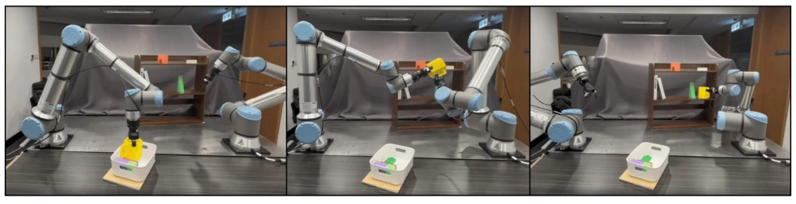
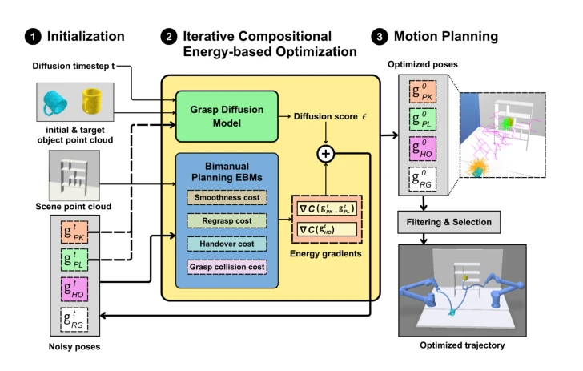
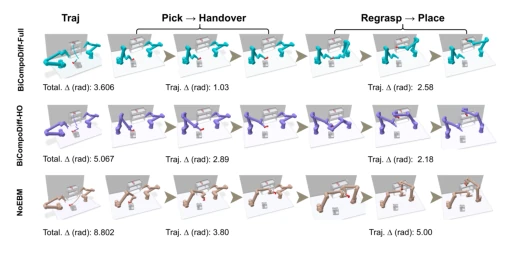

This paper adds a "brain" to dual-arm manipulation, generating grasps via diffusion models and refining them with energy models. The name BiCompoDiff sounds quite like a sci-fi movie. The highlight is linking grasp, handover, regrasp, and placement into joint optimization, rather than slicing sausage step-by-step like traditional methods. However, it assumes perfect perception; in reality, if an object's position deviates slightly, this "energy gradient" may go astray directly. Moreover, computation time is nearly 10 times that of pure sampling baselines; although effective, real-time performance is a question mark. Overall, it is a theoretical victory, but engineering-wise depends on whether the simulator can withstand the load, as running on real hardware, compute cost is also money. Although this end-to-end optimization idea is appealing, robustness in open environments is still a question mark, as "perfect perception" in simulation is too luxurious in reality.
When robots aim to place objects at designated positions, sometimes directly grasping and placing is not feasible because space is insufficient or joints cannot reach, requiring intermediate handover and turning. Previously, single-arm methods either relied on external fixtures [1] or found intermediate plane poses [3], which were too rigid. Although dual-arm is flexible, coordinating two hands is a difficult problem. Existing redirection methods mostly split tasks into serial stages, relying on rejection sampling [3] or heuristic rules; candidate samples are too many, efficiency is low, and often ignore overall trajectory cost, leading to path redundancy. This paper aims to solve this "wanting both" problem: both high grasp quality, safe handover, smooth path, and collision avoidance; traditional step-by-step optimization is hard to balance. Especially when grasp points and placement points conflict, how to find that perfect intermediate handover pose has always been a dual-arm manipulation pain point.

Fig. 1: Bimanual reorientation of a yellow cup using BiCompoDiff: the left arm picks and hands over the object, enabling the right arm to regrasp and place it in a reoriented pose with smooth, collision-free coordination.

Fig. 3: Overview of the proposed BiCompoDiff framework pipeline. Phase 1: Noisy initial poses (gt P K, gt P L, gt HO in world frame) are randomly sampled, and gt RG is derived from the other three. Point clouds (object + environment) are fed into the grasp diffusion model and the bimanual planning EBMs. Phase 2: The diffusion model predicts ϵ-scores with current timestep t and noisy poses (gt P K, gt P L converted to object frame), which are combined with energy gradients from the compositional bimanual planning EBMs (encoding smoothness, regrasp, handover, and grasp collision costs). These guidance signals iteratively refine the noisy poses (gt P K, gt P L, gt HO) at each reverse diffusion timestep. Phase 3: At timestep t = 0, collision-free pose pairs are filtered and ranked by composite
方法Method
整体流程叫 BiCompoDiff，核心是在扩散模型的反向去噪过程中注入能量模型的梯度。首先用预训练的 GraspGen 生成抓取候选，然后在去噪的每一步，把任务约束（碰撞、平滑、换手可行性、重抓安全）编码成可微的能量函数。这些能量函数的负梯度会像“磁铁”一样把采样点拉向可行区域。特别值得一提的是 SubnetIK，它用神经网络近似逆运动学，保证了梯度可传，解决了传统解析 IK 不可微的问题。最后用退火 MCMC 采样在复合能量景观上细化抓取位姿，选出最优解传给运动规划器。这相当于让扩散模型在生成时就“懂规矩”，而不是生成一堆垃圾再过滤。通过这种方式，系统能同时考虑抓取质量和运动可行性，避免了传统方法中规划与执行脱节的问题。
The overall process is called BiCompoDiff, with the core being injecting energy model gradients into the diffusion model's reverse denoising process. First, pre-trained GraspGen generates grasp candidates, then at each denoising step, task constraints (collision, smoothness, handover feasibility, regrasp safety) are encoded into differentiable energy functions. The negative gradients of these energy functions act like "magnets" pulling samples toward feasible regions. Particularly worth mentioning is SubnetIK, which uses neural networks to approximate inverse kinematics, ensuring gradient propagation, solving the traditional analytical IK non-differentiable problem. Finally, annealed MCMC sampling refines grasp poses on the composite energy landscape, selecting the optimal solution to pass to the motion planner. This is equivalent to letting the diffusion model "know the rules" during generation, instead of generating a pile of garbage and then filtering. Through this way, the system can simultaneously consider grasp quality and motion feasibility, avoiding the planning and execution disconnect problem in traditional methods.

Fig. 4: Visualization of bimanual reorientation trajectories for placing a bridge-shape brick from lying flat on the ground to standing upright on a shelf. BiCompoDiff-Full minimizes joint displacement from PK to HO while enabling smooth side-regrasping for final placement. BiCompoDiff- HO optimizes handover to a near-standing pose, reducing reorientation effort during the final RG to PL phase and yielding the most efficient RG to PL trajectory, but at the cost of higher joint delta earlier. NoEBM produces inefficient trajectories, requiring excessive object flipping and rear regrasp. Overall, Full mode achieves the best balance between PK to HO and RG to PL trajectory efficiency.
Simulations tested 60 tasks, divided into three difficulty levels, plus real robot validation. Baselines selected NoEBM removing energy model and adapted ReorientBot. Results were quite bright, success rate higher than strong baseline by over 20%, joint displacement reduced by 37%, trajectories smoother. Ablation experiments showed, full mode optimization (Full) better than only optimizing handover (HO), MCMC sampling also helpful. However, real experiments assumed perfect perception, no noise added. Comparing with ReorientBot found, although it has many samples, BiCompoDiff's joint optimization avoided exhaustive search, efficiency higher. In real scenarios, T-shaped block and cup redirection both verified trajectory efficiency improvement, proving sim-to-real feasibility, although perception accuracy requirement is high.